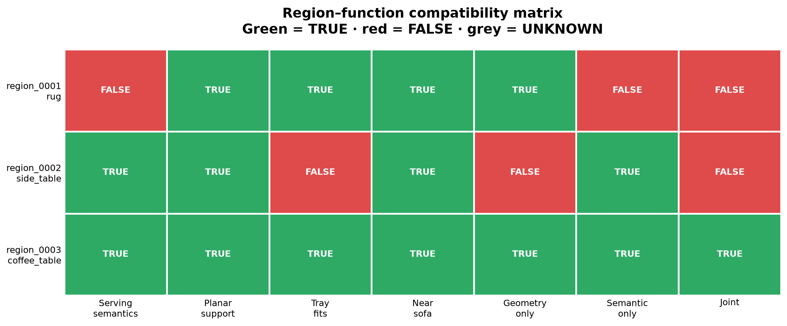
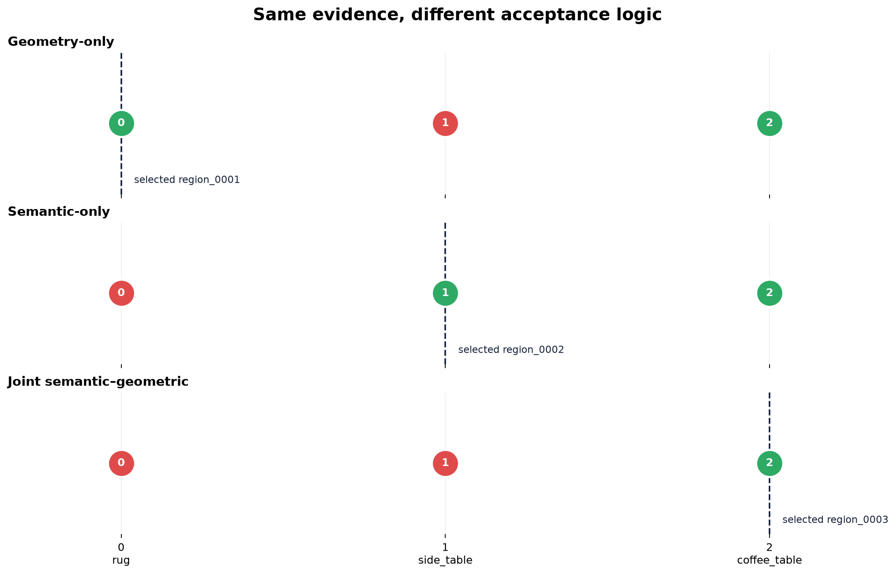
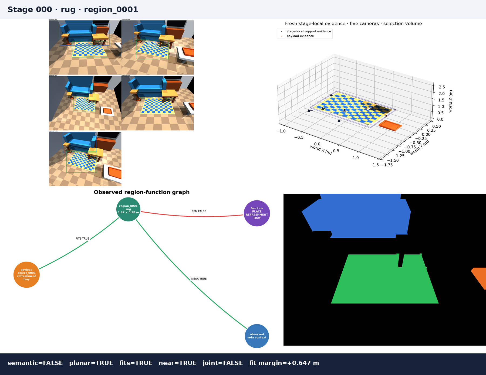
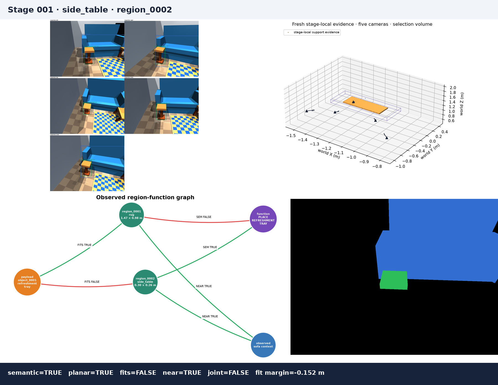
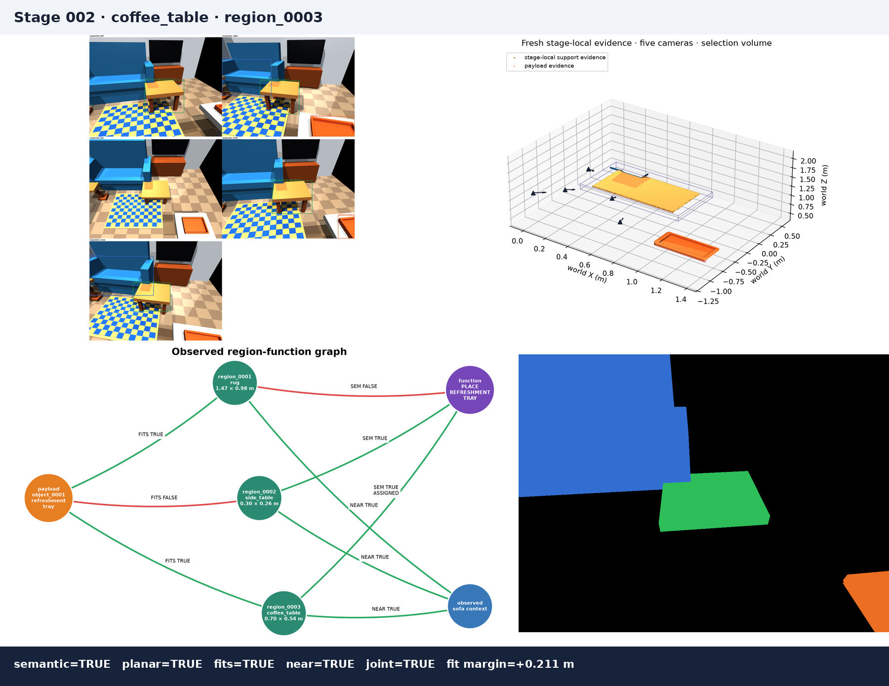

Living-room Region Ablation 1
Place the refreshment tray on a suitable living-room surface within easy reach of the sofa.
This benchmark grounds a functional destination region. It does not execute placement, planning, TAMP, an FM, LLM, or VLM.
What the ablation demonstrates
- A large planar rug passes geometry but is semantically inappropriate.
- A side table is semantically suitable but too small for the measured tray.
- Only the coffee table passes semantics, planar support, tray fit, and sofa context.
- Candidate ranking proposes an inspection order; it never overrides verification.
- All three modes read exactly the same saved RGB-D, detections, masks, and clouds.
| Mode | Selected generic region | Completion stage | Correct? |
|---|---|---|---|
| Geometry-only | region_0001 | 0 | No — diagnostic false result |
| Semantic-only | region_0002 | 1 | No — diagnostic false result |
| Joint semantic–geometric | region_0003 | 2 | Yes |
Compatibility matrix

Ablation progression

Observed graph

Measured evidence table
| ID | RGB parent | confidence | views | support L×W (m) | fit margin (m) | semantics | planar | fits | near | joint | rejection |
|---|---|---|---|---|---|---|---|---|---|---|---|
| region_0001 | rug | 0.883 | 5 | 1.472 × 0.976 | +0.647 | FALSE | TRUE | TRUE | TRUE | FALSE | REGION_REJECTED_SEMANTIC |
| region_0002 | side_table | 0.626 | 5 | 0.304 × 0.264 | -0.152 | TRUE | TRUE | FALSE | TRUE | FALSE | REGION_REJECTED_FIT |
| region_0003 | coffee_table | 0.753 | 4 | 0.699 × 0.541 | +0.211 | TRUE | TRUE | TRUE | TRUE | TRUE | None |
Progression animation
{kind=link}
Stage and component audit
Stage 000: rug

{kind=link}
{kind=link}
{kind=link}
{kind=link}
Stage 001: side_table

{kind=link}
{kind=link}
{kind=link}
{kind=link}
Stage 002: coffee_table

{kind=link}
{kind=link}
{kind=link}
{kind=link}
Evidence boundary
Geometry uses typed fresh RegionMeasurementEvidence and
PayloadMeasurementEvidence. Cumulative, full-room, configured-size,
and hidden simulator geometry are rejected as measurement inputs. RGB semantics
come from YOLO-World and are associated through visible projected evidence.